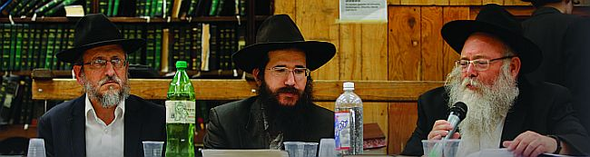

חלק שני תורה מול עולם : כשאומרים “אין לו לדיין אלא מה שעיניו רואות” – האם הכוונה
תורה מול עולם: כשאומרים “אין לו לדיין אלא מה שעיניו רואות” – האם הכוונה להתחשב רק במציאות הגשמית, או בדיוק להיפך? • בגשמיות כפשוטו: האם זה לא מספיק שהרבי חי אצלי ברוחניות? לכאורה, חיים רוחניים הם אמיתיים לא פחות! • דרכי ההתקשרות: כיצד מאפשר לנו הרבי מלך המשיח להתקשר אליו במצב הנוכחי? איך אפשר להכנס
חלק שני
תורה מול עולם: כשאומרים “אין לו לדיין אלא מה שעיניו רואות” – האם הכוונה להתחשב רק במציאות הגשמית, או בדיוק להיפך? • בגשמיות כפשוטו: האם זה לא מספיק שהרבי חי אצלי ברוחניות? לכאורה, חיים רוחניים הם אמיתיים לא פחות! • דרכי ההתקשרות: כיצד מאפשר לנו הרבי מלך המשיח להתקשר אליו במצב הנוכחי? איך אפשר להכנס ליחידות? איך ועל מה צריכים לכתוב לרבי?
חלקו השני של הסימפוזיון המרתק ‘25 שנה של אמונה’ שנערך בחודש החגים לאלפי אורחי המלך – כ”ק אדמו”ר מלך המשיח שליט”א – על ידי מחלקת הכינוסים וההרצאות של ‘אש”ל הכנסת אורחים’. רבנים ומשפיעים משיבים על שאלות נוקבות, ומחדירים את האמונה בנצחיות חייו של הרבי, לתוך כלי השכל • חלק שני: חי וקיים והתקשרות עכשווית

משתתפים:
הרב חיים לוי יצחק גינזבורג, משפיע בישיבת תות”ל ראשון לציון
הרב שלום יעקב חזן, חבר מערכת אוצר החסידים ועורך בית משיח
הרב משה קורנווייץ, ר”מ בישיבת חח”ל נצרת עלית וחבר מכון הלכה חב”ד
מנחה:
הרב שמואל גינזבורג, נו”נ בישיבת חח”ל צפת
הביא לדפוס: מנחם אהרונסון
חלקו השני של הסימפוזיון, יעסוק באמונת החסידים הבולטת לעין כל, בתקופה זו של העלם והסתר - שמעוררת תמיהות לא פשוטות אצל אלו שאינם מודעים מספיק למקורות. מדובר באמונה שהרבי מלך המשיח חי וקיים כפשוטו, בגוף גשמי, למרות שהעולם מראה אחרת.
ההלכה והמציאות:
לא מתחשבים ב”מה שעיניו רואות”?!
נפתח בצד ההלכתי של הענין. זהו נושא שמטריד לא מעט אנשים אשר, כיהודים מאמינים, רואים בהלכה ערך עליון. המילה האחרונה בכל נושא שעולה על הפרק. וכמובן, הענין מתחזק שבעתיים כאשר מכירים את חרדת הקודש העצומה שבה מתייחס הרבי לכל מילה מהשולחן–ערוך.
האם על פי ההלכה אפשר כך לבטל את המציאות המוחשית שנראית לעינינו? האם לא נקבע במפורש הכלל ש”אין לו לדיין אלא מה שעיניו רואות”, או בסגנון דומה בדינים אחרים?
הרב משה קורנווייץ: המנחה השתמש בציטוט מדוייק ביותר, “אין לו לדיין אלא מה שעיניו רואות”. ואסביר למה דוקא הציטוט הזה מגדיר בדיוק את הנושא: רבים מבינים זאת בטעות, כאילו התורה נותנת חשיבות גדולה לראיית העינים; גדולה עד כדי כך, שלפעמים מראה העינים יכול לדחות חלילה את הידוע לנו מהתורה הקדושה.
למעשה, המשפט הזה מגיע לומר בדיוק ההיפך: אין צורך לחקור ולברר מה הייתה המציאות בפועל, אלא מספיק לדעת מה יש להלכה לומר על המציאות כפי שהיא נראית לדיין עכשיו.
הכלל הזה מתבטא בהלכה בתחומים רבים. אין כאן המקום לפרט את עשרות הדוגמאות שיש לכך. כל מי שהולך לשאול רב, בדינים כאלו ואחרים השייכים לזה, מבין מיד שזהו הפשט. “אין לו לדיין אלא מה שעיניו רואות” - היינו, שהרב לא צריך לברר את המציאות כפי שאירעה, אלא מספיק לו לדעת מה יש לתורה לומר במקרה הזה כפי שנראה לנו עכשיו. כשאתה הולך לשאול שאלת רב - ישנם מקרים רבים שהרב מתייחס ופוסק לפי המקרה שנודע לו, והוא אינו צריך לחטט ולבדוק מה בדיוק היו פרטי המקרה.
למשל, ישנו הדין של “כל הטומאות כשעת מציאתן” (טהרות פ”ג מ”ה. שם פ”ד מי”ב). כאשר ישנו ספק בדיני טומאה וטהרה, וכעת מצאנו וראינו מקרה טהור - לדוגמא, כיכר טמאה שנזרקה לבין אוכלים טהורים, ואינה נוגעת בהם - אנחנו פוסקים לפי הנראה כעת לעינינו, שהם טהורים. אף על פי שיכול להיות שהכיכר נגעה בהם וטימאה אותם קודם - לא מוטל על הרב לברר את המציאות, האם הכיכר נגעה או לא נגעה, אלא הוא מתייחס לדברים “כשעת מציאתן” ופוסק כפי שהתורה מתייחסת לכך עכשיו.
ולכן אדרבה: הדין ש”אין לו לדיין אלא מה שעיניו רואות”, מדגיש את כוחה של פסיקת ההלכה אפילו כשהמציאות בפועל איננה כזו.
קל וחומר, כשמדובר על מקרה שבו ההלכה קובעת את המציאות בפועל, ורק שלמדע, לרפואה וכדומה יש מה לומר, ולא תמיד בדיוק בהתאם לקביעת ההלכה. ברור שבמקרה שדעת ההלכה ברורה בנושא, והיא נותנת בעצמה גדרים ברורים, אין שום מקום לחקור מה דעת חכמי הטבע. האם כשיש ספק אודות “טריפה”, הרב צריך לשאול את החוקרים האם הבהמה עתידה לחיות - או שעליו לבדוק האם בהלכה היא מוגדרת כ”טריפה”?
יש וויכוח ארוך בראשונים, אודות הנאמנות שההלכה נותנת לרופאים. זהו נושא סבוך שלא נכנס אליו, אבל ראוי לציין שיש ראשונים רבים, כמו הר”ן, שסוברים שאין נאמנות לרופאים להגדיר את המציאות שעליה ההלכה צריכה לפסוק. ישנם גם מקרים שבהם ההלכה כן מתחשבת ברפואה, אבל אף פעם זה לא בגלל שלמציאות יש תוקף יותר מהתורה, כביכול.
דוגמא טובה לכך אפשר למצוא בענינו של יום כיפור, דמיניה אזלינן: לפני יום כיפור עסוק כל רב בשאלות של אלו שמותר או אסור להם לצום. ישנם מקרים רבים, כמו אדם שלקה בדלקת ריאות למשל, שבהם רופא יכול לקבוע שלדעתו האדם בריא ויכול לצום. לדלקת ריאות, אפשר לתת אנטיביוטיקה - והכל בסדר. אבל ההגדרה ההלכתית של “פיקוח נפש” שונה במקרים אלו, ולכן רב יאסור על אדם כזה לצום. איי, הרופא אומר שהכל בסדר?! - לא מתחשבים עם כללי הרפואה, אלא עם כללי ההלכה!
או דוגמא אחרת: על פי תורה, על פי שולחן ערוך, אדם אינו יכול לחיות בלי לב. זה לא שייך. ולכן, אדם שהוציאו ממנו את הלב - על פי ההלכה מוגדר כמת. כאשר התפתחה הטכנולוגיה, והרופאים החלו לעשות השתלות לב - כאשר מחברים אדם למכונת לב - נשאלו גדולי ישראל על דעת ההלכה בנושא: האם באמת מותר לערוך השתלת לב, ואין כאן איסור רצח? ייתכן שכאשר הוציאו ממנו את הלב והפכו אותו למת בהגדרה ההלכתית, זה רצח לכל דבר…
לכאורה, מה מקום לשאלה - הרי רואים שהמכונה עובדת, הרופאים אומרים שהוא חי? אבל זה לא מספיק. המציאות לפי כללי הרפואה לא פותרת את הבעיה, מוכרחים לבדוק האם בכללי ההלכה יש מקום למציאות הזו.
נקודת המוצא לכל הנושאים הללו, היא: רב צריך לחפש ולבדוק מה כתוב בשולחן ערוך, מהם גדרי ההלכה בקשר למקרה, ואז לבדוק איך להחיל את הגדרים הללו על המציאות שמולו - ולא להיפך. כמובן, ישנו ווארט שאמר הגאון מבריסק: “רב לא צריך לפסוק מתוך יורה דעה, אלא על פי יורה דעה” - זאת אומרת, הוא חייב להכיר היטב את המציאות שעליה הוא פוסק. אבל גם למציאות הזו, ברור שהוא ניגש אך ורק מתוך נקודת המוצא של - מה ההלכה אומרת על זה.
בקיצור, להלכה יש כללים משלה. וכמובן, שכאשר ישנה סתירה כביכול בין המציאות לבין ההלכה - יש צורך לבדוק מהם הגדרים שנותנת ההלכה לענין, ולא מהם הגדרים שנותנים חוקרי הטבע.
תורה ועולם:
מה יודעים בוודאות של מאה אחוז?
עד כאן דיברנו על יחס ההלכה אל המציאות. מכאן נמשיך ישירות לשאלה הבאה, הנוגעת בלב הסוגיא: מה עושים כאשר מה שכתוב בתורה נראה כמתנגש עם המציאות הנראית לעינים? כיצד עלינו להתייחס לענין, ומה צריכים להסביר לאלו ששואלים על כך?
הרב שלום יעקב חזן: לא מזמן התחלנו ללמוד את הרמב”ם, וישנו ביאור מיוחד של הרבי שליט”א על ההלכות הראשונות של פרק א’ בהלכות יסודי התורה, הפרק הראשון ברמב”ם.
בהלכה ג’, מסביר הרמב”ם את אמיתת מציאותו של הקב”ה על פי ההיגיון: “כל הנמצאים צריכין לו, והוא ברוך הוא אינו צריך להם ולא לאחד מהם - לפיכך אין אמתתו כאמתת אחד מהם”. ולאחר מכן, ממשיך הרמב”ם בהלכה הבאה ואומר: “הוא שהנביא אומר: וה’ אלהים אמת . . והוא שהתורה אומרת: אין עוד מלבדו”.
והרבי מסביר (הדרן על הרמב”ם תשמ”ו ס”ו), מדוע צריך הרמב”ם להוסיף ולומר “הוא שהנביא אומר”, “הוא שהתורה אומרת”, ולהביא פסוקים והוכחות מהתורה לאמיתתו של הקב”ה? הרי רק עכשיו הסברת את זה היטב על פי השכל, וכל מי שיחשוב בהיגיון יוכל להבין שהקב”ה הוא המציאות האמיתית; אם כן, בשביל מה צריכים פסוקים?
אלא הענין הוא - שכשמדברים על הקב”ה, השכל אינו תופס מקום. הרי הקב”ה ברא את השכל ואת כללי השכל, ובאותה המידה היה יכול לברוא כללים אחרים. הוא עצמו - למעלה מהשכל! ולכן, גם אם הבנו היטב בשכלנו ענין מסויים שקשור לקב”ה, אנחנו לא יכולים להיות בטוחים שזו האמת [ולמשל, מה שאדמו”ר הזקן מוכיח בשער היחוד והאמונה (פ”ב) שבריאת העולם מתחדשת ע”י הקב”ה בתמידיות בכל רגע - מבאר על כך הרבי שההוכחות הללו אינן מספקות, כי הקב”ה יכול גם לברוא את העולם באופן אחר, וההוכחות השכליות על כך אינן מוכרחות, כי גם הן נקבעו על ידי הקב”ה, והקב”ה יכל לברוא את העולם בצורה אחרת].
אם כן, איך יכולים לדעת מהי האמת? כי כך כתוב בתורה. בתורה נאמר שבריאת העולם היא באופן של יש מאין שמתחדש בכל רגע מחדש, ולכן אנחנו יודעים בוודאות על חידוש העולם בכל רגע. והקב”ה בחר לברוא את העולם בצורה שגם יתאים להוכחות שמביא אדמו”ר הזקן בשער היחוד והאמונה; ובתורה ישנם פסוקים על “ה’ אלוקים אמת”, ומהם אנחנו יכולים לדעת בוודאות על אמיתת מציאותו של הקב”ה. התורה היא הדבר היחיד שהוא וודאי במאה אחוז.
ואם כך, התשובה לשאלה ברורה: כאשר נראה שיש ‘התנגשות’ בין התורה לבין המציאות - ברור שהתשובה המדוייקת והוודאית היחידה, נמצאת בתורה! הרי את המציאות כפי שאנחנו מבינים, עם כל הכללים שלה, ברא הקב”ה. ולכן כשהוא עצמו כתב משהו בתורה - ברור שכללי המציאות, שנבראו על ידו, לא יכולים להחליש את תוקפה של מילה אחת מהתורה!
כאשר אנחנו יודעים מה כתוב בתורה, אנחנו אפילו לא צריכים לבדוק האם המציאות מתאימה לזה, ואיך העולם מתייחס לזה. אותנו מעניינת רק ההתייחסות היהודית, התורנית לנושא.
דברים בסגנון הזה שמענו מהרבי בצורה חריפה ביותר בעת משפט הספרים (שיחת ט”ו תמוז תשמ”ה). הרבי דיבר על כך שהגנב טוען שהוא עצמו היה בלוויה, וכבר למעלה משלושים וחמש שנים שאין יותר רבי, רחמנא ליצלן… והרבי, שחזר שוב ושוב על כך ש”הוא בחיים”, זעק: “אין לי כל שפה משותפת איתו!”
מה זאת אומרת שלרבי אין שפה משותפת איתו - הרי הרבי עצמו גם כן השתתף בלוויה של הרבי הריי”צ… על מה בדיוק מתווכח הרבי עם הגנב?
אלא שהרבי מתייחס לכל דבר וענין כפי שתורת אמת מתייחסת אליו. הרבי יודע מה אנחנו חושבים שקרה בי’ שבט, אבל הרבי מורה לנו את הגישה הנכונה לאירועים - מה התורה אומרת על זה? ואם התורה אומרת ש”הוא בחיים”, זו המציאות האמיתית, וכך עלינו לראות את הדברים. וכשיש אדם שדבר ראשון מעניינת אותו מציאות העולם החומרית - אין לרבי שום שפה משותפת איתו.
כחסידים, ברור שזו ההסתכלות שעלינו לאמץ: כשהרבי אומר משהו, וזה נעשה ענין בתורה, זו ההסתכלות האמיתית על כל נושא. וכאשר נראה שהמציאות בעולם סותרת לזה - אפשר לנסות לשבור את הראש, לנסות למצוא הסבר; ואם לא מוצאים - גם לא נורא, “תשבי יתרץ קושיות ואבעיות”… אבל הכלל הוא: כשכתוב משהו בתורה, כשהרבי אומר משהו - זו המציאות האמיתית.
הרב חיים לוי יצחק גינזבורג: כדאי להוסיף שהרבי התייחס במפורש לשאלה זו בדיוק. בשיחת שבת פרשת ויגש תשמ”ז, בשבת שאחרי ה”דידן נצח” בה’ טבת, אומר הרבי שבעולם עלולה להישמע הטענה ש”ספדו ספדניא וחנטו חנטיא”… מהמילים של הרבי ברור, שהרבי מתייחס ממש למצב זה שבו אנו נמצאים אחרי ג’ תמוז…
והרבי אומר מפורשות, שבמצב כזה צריכים לומר במפורש את המציאות כפי שהיא על פי תורת אמת. וזאת משתי סיבות: ראשית, כי זו האמת על פי תורה, ולכן לא משנה אם העולם יקבל זאת או לאו. ושנית, האמת היא שהעולם מוכן לקבל זאת; וכאשר יאמרו זאת בדרכי נועם ובדרכי שלום ובתוקף המתאים, יראו שהעולם מוכן לקבל את הדברים.
בגוף גשמי:
למה זה חשוב?
לאחר ההסברים הברורים על כך שהרבי חי וקיים בגשמיות, ושכל השאלות ממציאות העולם אינן צריכות להפריע - מן הראוי לנסות להבין: למה זה כל כך חשוב?
יבוא מישהו ויטען, שהוא חי עם הרבי ברוחניות. ברור לו שהרבי ממשיך להנהיג אותנו ולא עוזב את צאן מרעיתו, גם אם הוא לא מסתדר עם הענין של חיים בגוף גשמי כפשוטו. האם זה מפריע לאמונה היהודית? האם חסר לו באחד מעיקרי הדת?
לכאורה, ניתן לחיות חיים יהודיים וחסידיים כראוי, גם כשמאמינים ברבי נצחי ברוחניות. ויהיו חכמים שיאמרו, שאדרבה - אלו שמתעקשים על רבי שחי בגשמיות, זה רק מצד חסרון באמונה: לא ברור להם שמציאות רוחנית היא אמיתית, לא פחות מגשמיות…
הרב חיים לוי יצחק גינזבורג: שוחחתי פעם עם יהודי, שסיפר לי על הבן שלו - שלומד בישיבה שלא ממש דוגלת באמונה הזו של ‘חי וקיים כפשוטו ממש’ - שבכל פעם שהוא נמצא ב–770, הוא מסתובב ומתחמם דוקא כאן, בזאל הגדול, למטה. שאלתי אותו: “למה הוא נמצא דוקא כאן למטה? מה חסר לו, למשל, בקומה העליונה?” הוא ענה לי שכאן נמצאים יותר מאלו המאמינים ב’חי וקיים כפשוטו’, ולכן כאן יותר חיים. שם - אנשים יותר קרים…
זו נקודה פשוטה וברורה. כשאצל חסיד הרבי חי בגשמיות, גם הוא ‘חי’. כשמתחילים להיות כל מיני פשט’לאך בחיים של הרבי, ממילא גם החיים של החסיד הם לא כל כך כפשוטו…
הרב שלום יעקב חזן: גישה כזו היא הפוכה מכל מה שהרבי מלמד אותנו, שחיים של חסיד חייבים להשתקף גם בגשמיות. כאשר הענינים נשארים ברוחניות ואינם יורדים לגשמיות ממש, זאת אומרת שלא חיים איתם באמת לאמיתו; אולי ברמה של “שפת אמת”.
כשהרבי קובע ברור בשיחת ש”פ בא תשנ”ב, שבדורנו נשיא דורנו חי בגשמיות בפועל בעולם - זאת אומרת שזה בגשמיות. אם אנחנו עוקרים את זה מגשמיות ומשאירים הכל ברוחניות, מדוע בכלל אנחנו עובדים כאן בעולם הגשמי? אפשר כך לעקור את הכל.
יהודי מאמין באמת של התורה הקדושה, ויודע שהכל נכון באמת לאמיתו בגשמיות. גם אם אנחנו לא רואים. כמו הפתגם הידוע על הסוסים שמובילים את העגלה וחושבים רק אודות התבן, אבל זה לא משנה את המציאות האמיתית שעליה משוחחים החכמים הנוסעים בעגלה… מי שלא מוכן להכיר במציאות האמיתית של התורה, שהיא אמיתית גם בגשמיות - יש לו ספיקות לא רק בענין כזה או אחר, אלא ספק על כל אמיתית התורה, רחמנא ליצלן!
הרב משה קורנווייץ: השאלה היא - היכן עובר הגבול? אם השכל שלי יכול לשפוט ולהחליט מה מתוך התורה שייך לגשמיות ומה רק רוחני, איפה בדיוק אעצור? אולי גם תפילין זה ענין רוחני, ואולי מצות סוכה… מה נשאר לקיים בפועל?
כאשר הרמב”ם כתב את הספר ‘מורה נבוכים’, היו כאלו מגדולי ישראל שיצאו נגד הפצת הספר לאלו שאין להם דעה רחבה מספיק. הם חששו שהאופן שבו לומד הרמב”ם ענינים מסויימים בתורה ובאגדות חז”ל בצורה מופשטת ורוחנית, עלול להטעות אנשים מסויימים, שיחשבו שהותרה הרצועה - וכל אחד יכול להיפטר מכל מה שלא מוצא חן בעיניו, בתואנה שזה רק ענין רוחני…
הרשב”א כתב אז חרם נגד לימוד הפילוסופיה, ובו הוא תוקף בחריפות את אלו שפירשו ענינים מן התורה ברוחניות לפי נטיית ליבם: “כי יאמרו על אברהם ושרה כי הוא חומר וצורה, ושנים עשר שבטי ישראל הם שנים עשר מזלות . . כי יחזרו הכל לתוהו ובהו . . ובאמת מראים עצמם שאין להם בפשטי המצות שום אמונה”.
ולכן, עדיף שאדם יחשוב שהכל כפשוטו ממש. גם הענינים היותר תמוהים, גם אותם יש לקבל כפשוטו.
כאשר מדובר על מציאותו של הרבי, הרי כלל לא ייתכן לפרש את זה באופן רוחני. אין לעולם שום קיום ללא רבי גשמי. אבל מי שינסה להוציא את הענין מפשוטו, מה הוא כן יהיה מוכרח להשאיר כפשוטו?
הרב חיים לוי יצחק גינזבורג: אולי כדאי להזכיר נקודה חשובה נוספת: הידיעה שהרבי חי וקיים כפשוטו, חשובה לא רק להתקשרותו והנהגתו של החסיד, אלא נוגעת ופועלת גם אצל הרבי.
את הענין הזה רואים בדברי רש”י המפורסמים, שהרבי מביא בשיחות, על “אין אנו מניחין אותו” - זאת אומרת, שליהודים יש כח למנוע את ההסתלקות של משה רבינו. הרבי הביא את הדברים בתקופת משפט הספרים - בשנת תשמ”ו, בשיחת ש”פ האזינו - ואמר שכך צריכה להיות ההנהגה עכשיו, עם נשיא דורנו, באופן של “אין אנו מניחין אותו”. והרבי ממשיך ואומר, שלכאורה דברים אלו הם “ווילדע רייד” [= דיבורים פראיים]; אבל אף על פי כן, מכיוון שנמצאים בזמן פראי, אפשר לדבר דברים פראיים…
כלומר, אף על פי שהרבי חי וקיים כפשוטו, וזו עובדה ברורה ומוחלטת, שאינה תלויה בנו - בנוסף לכך ישנה חשיבות גדולה גם להנהגה שלנו בהתאם לכך. שגם אנחנו נצעק ונכריז ש”אין אנו מניחין אותו”. דוקא הנהגה זו תעזור לכך שנגלה את הענין בפועל, וכל העולם יראה את הרבי בעיני בשר.
יחידות:
אפשר לעשות את זה עכשיו?
בהמשך לדברים, מתאים להעלות לדיון גם את אופן ההתקשרות המתאים לתקופה הנוכחית כאשר איננו זוכים לראות עין בעין את מלכנו.
אחד הדברים העיקריים ביותר בקשר שבין חסיד לרבו הוא מעמד ה”יחידות”, שבו החסיד נמצא מול הרבי ממש בקודש הקדשים, והיחידה של החסיד מתקשרת עם היחידה של הרבי. האם וכיצד ניתן להכנס ליחידות במצב בו אנו נמצאים עכשיו?
הרב שלום יעקב חזן: את הסדר בענין היחידות קבע הרבי בעצמו. הרבי הדגיש שהמקום שבו נכנסים ליחידות, הוא 770. אפילו לגבי הרבי הריי”צ, לאחר הסתלקותו, כאשר החלו לנסוע אל ציונו הקדוש להשתטחות וקריאת פ”נ - הדגיש הרבי שהמקום שאליו נכנסים ליחידות איננו הציון, אלא חדרו שב–770. וכלשונו הקדוש במכתביו: “קראתי הפ”נ בהיכל כ”ק מו”ח אדמו”ר הכ”מ שנכנסים שם לנתינת פדיונות וליחידות. כן אקראם בשעת הכשר על הציון” (אג”ק ח”ג ע’ תלה). “קראתי הפ”נ בער”ה על הציון, ואחר כך בהיכל כ”ק מו”ח אדמו”ר הכ”מ, שלשם נכנסים לנתינת פדיונות וליחידות” (שם ע’ תפה). זאת אומרת שהמקום לכניסה ליחידות הוא ב–770.
ובתוך 770 גופא - אצל הרבי מלך המשיח שליט”א, רואים במוחש, שבתחילה הסדר היה שנכנסים ליחידות בחדרו הקדוש; אחר כך העביר זאת הרבי לזאל למעלה; ולאחר מכן העביר זאת הרבי לזאל הגדול למטה, בסדר החדש של יחידות כללית.
אחר כך הוסיף הרבי וקבע עוד יותר: “וכל התוועדות עתה, היא מעין יחידות להרוצה בזה”. הרבי אף הוסיף ואמר, שישנה מעלה בכך שהיחידות ונתינת הברכות לכל אחד נעשית דוקא ברבים.
מכל זה ברורה התשובה לשאלה, אודות יחידות במצבנו עכשיו: הרבי בעצמו נותן לכל אחד הזדמנות להכנס ליחידות, בזמנים שבהם הוא מתוועד. אם רק הוא יתכונן לכך כראוי - יכול כל חסיד להגיע למצב הזה של יחידות. יחידות היא התקשרות היחידה עם היחידה של הרבי, ואם הרבי קובע שענין נעלה זה נפעל בעת ההתוועדות - ברור שהוא נפעל. גם אם אצל החסיד לא כל כך מורגש אותו ‘ציור’ של יחידות, כמו בשנים עברו…
הרב חיים לוי יצחק גינזבורג: שמעתי מהמזכיר הרב יהודה לייב גרונר, שבשנים הראשונות היו בחורים כאלו שלא נכנסו ליחידות, והרבי שאל אודותם - מדוע אינם נכנסים. הרב גרונר לא ידע לענות, והרבי שלח אותו לברר את הנושא, אבל באופן שלא ידעו שהרבי הוא זה שעומד מאחורי הדברים. הרב גרונר בירר זאת, ואמר לרבי שהם מפחדים להכנס.
- מי שהיה ביחידות, מבין מיד על מה מדובר. וגם מי שלא היה, יכול לצייר לעצמו את המעמד: אתה לבד מול הרבי, ונכנס למצב של ביטול במציאות. אתה מתבטל לגמרי. הרבי קורא אותך כאילו אתה שקוף, רואה את כל הבעיות שלך, וקורא את כל המחשבות שלך… לא פשוט.
כשהרב גרונר אמר זאת לרבי, הגיב הרבי: “מה הם חושבים, שבתפילות אינני רואה אותם?”
בעצם, כל מנחה עם הרבי זה כמו יחידות! כל התוועדות היא כמו יחידות! הרבי רואה אותך ו’קורא’ אותך ממש כמו ביחידות בקודש הקדשים.
למעשה, כל אחד יכול למצוא את ההזדמנות המתאימה, לפי ענינו. אפשר לעשות זאת בזמן התפילה עם הרבי, בזמן ההתוועדות או בזמן אחר - כפי שמרגיש כל אחד. לעצור, להתבונן ולצייר במחשבתו את פני הרבי, וזה ממש כמו יחידות.
הרב משה קורנווייץ: כדאי להוסיף עוד נקודה בקשר לענין היחידות. ישנו מכתב ידוע של הרבי הריי”צ, המובא בהיום יום כ”ד סיון - אודות “השואל במה היא ההתקשרות שלו אלי מאחר שאין אני מכירו פנים”, שבו מבוארת מעלת “ההתקשרות האמיתית” על ידי לימוד תורתו של הרבי. אמנם, ישנו במכתב קטע נוסף שלא הובא בהיום יום, ובו מסביר הרבי הריי”צ את מעלת הקשר על ידי כתיבה לרבי. וזלה”ק (אגרות קודש אדמו”ר מוהריי”צ חלק ה’ ע’ צד):
“ההכירות האמיתית היא היכרות רוחנית, היינו הידיעה במה שלומדים והידיעה איך היא ההנהגה בקיום המצות ובמדות ובמדות, אשר היכרות זו תלויה רק בו - שיכתוב מה הוא לומד, ואיך היא הנהגתו, טבעו ומדותיו ובמה הוא עוסק”.
זאת אומרת: כאשר אנחנו כותבים לרבי, גם כשלא רואים את הרבי פנים בפנים - זה מה שיוצר את ההיכרות בינינו לבין הרבי. אנחנו מציבים את עצמנו ממש מול הרבי, כך שהרבי מכיר אותנו, והקשר בינינו לא נשאר ברוחניות. אפשר לומר שזה מעין הענין של יחידות.
זה ענין שרואים אותו בחוש ממש. כל מי שיש לו ניסיון בזה, ומקפיד על כתיבה לרבי בקביעות, רואה זאת בגלוי - שהקשר עם הרבי דרך הכתיבה אליו הוא מוחשי, והרבי מדריך בצורה מפורטת וברורה צעד אחר צעד. להרגשתי, דוקא כיום הקשר לרבי על ידי כתיבה חזק יותר מאשר פעם.
אגרות קודש:
איך הרבי רוצה שנכתוב?
נסיים בענין נוסף, הנוגע להתקשרות של חסידים לרבי בתקופה העכשווית. הרב קורנווייץ הזכיר את הנושא הכל–כך עיקרי בהתקשרות - כתיבה לרבי.
בזמננו, עד להתגלות הקרובה תיכף ומיד - התפשט המנהג לכתוב לרבי דרך ספרי ה’אגרות קודש’, וחסידים מתנהגים על פי תשובת הרבי שניתנה בעמוד שנפתח, אפילו כשמדובר בענינים של פיקוח נפש. האם יש לזה התייחסות מהרבי? מהו הענין בזה?
הרב שלום יעקב חזן: ראשית, כשמדברים על כתיבה לרבי, יש פרט עיקרי שראוי להדגיש: כל הדרכים הטובות והנפלאות וכו’ לקבל מהרבי תשובות, אינן יכולות לבוא לפני ובמקום הדרכים שהרבי עצמו קבע.
בשנת תשמ”ח קבע הרבי כללים ברורים, אלו שאלות ניתן לשאול אותו. בעניני רפואה - הורה הרבי לשאול רופאים; בעניני פרנסה - להתייעץ עם ידידים מבינים; בעניני עבודת ה’ - לשאול משפיעים; וכן הלאה (שיחת ש”פ בשלח תשמ”ח סי”ט. חמשה עשר בשבט תשמ”ח ס”ז). כמובן שגם לאחר מכן נותן הרבי את האפשרות לבקש ברכות, אך כל זה רק כשכותבים ושואלים בהתאם להוראות ברורות אלו.
אני זוכר שהיו בשנים שלאחר מכן כמה וכמה מקרים, שבהם אנשים ניסו להכניס שאלות לרבי, אך המזכירים לא הסכימו - מכיון שהרבי לא נתן רשות לשאול אותו שאלות בנושאים השייכים לרופאים, משפיעים וכו’.
כמובן, אין זה אומר שהרבי הפסיק לתת לנו מענה ודרך בכל השאלות בנושאים הללו - חלילה! זה רק אומר שהרבי החליט לתת לנו אותם בדרך אחרת, שונה מאשר קודם לכן.
פעם ר’ שניאור זלמן גוראריה קיבל מהרבי תשובה לשאול ידידים מבינים. כאשר הוא טען לרבי, שהוא רוצה לקבל מענה ישיר מהרבי עצמו, אמר לו הרבי: “ומה אכפת לך שהמענה שלי יעבור דרך ידידים מבינים?” כלומר: זו תשובה של הרבי ממש! רק שהרבי מחליט פעם לתת את התשובה בעצמו, ופעם לתת אותה דרך ידידים…
ישנו סיפור על אחד מאדמו”רי גור שהגיע אליו חסיד בבקשת ברכה לרפואה שלימה, והרבי הפנה אותו לרופא. החסיד אמר שכבר היה אצל הרופא, והרבי ענה לו: “חז”ל דרשו “ורפוא ירפא - מכאן שניתנה רשות לרופא לרפאות” - כלומר “מכאן”, מהחדר הזה, כאן ניתנת הרשות לרופא לרפאות… זה שהיית אצל הרופא קודם, לא מספיק; עכשיו, אחרי שהיית כאן, כשתלך אליו זה יעזור”… כך גם לגבי הרבי שליט”א, ששולח את החסיד להתייעץ עם רופאים וידידים וכו’.
ולאחר הקדמה זו, ניתן לדון על אופן הכתיבה לרבי על ידי ה’אגרות קודש’.
התייחסויות דומות, ניתן בהחלט למצוא בתורת הרבי שליט”א - למשל, כאשר הרבי מתייחס למנהג לפתוח חומש ולנהוג כפי המובן מאותו מקום שנפתח. שמעתי מר’ שניאור זלמן גוראריה, שפעם - הרבה לפני תשמ”ח - הורה לו הרבי לפתוח חומש בקשר לבעיה שהתעוררה לו עם החוק. הוא פתח, אך לא מצא מענה… כשסיפר זאת לרבי, שאל אותו הרבי: “איפה פתחת?” הוא השיב שפתח בתחילת פרשת לך לך, בפסוק “ואגדלה שמך”. אמר לו הרבי: “יש לך תשובה ברורה, אתה תקבל את הענין”.
יותר מכך: אפשר למצוא סמך לפתיחה בספר אגרות קודש דוקא, מעצם העובדה שהרבי בחר להוציא זאת דוקא בשנים האחרונות שלפני תקופת ההעלם והסתר. זה מדהים - הדבר היחיד מכל תורת הרבי שהרבי הורה להוציאו באתערותא דלעילא, הוא סט האגרות קודש! לא השיחות, לא המאמרים ולא שאר הענינים…
באותן שיחות שבהן הורה הרבי להפסיק לשאול אותו בענינים שונים, הרבי גם אמר שנשיא הדור נתן את הכח לתלמידיו למצוא את התשובות לשאלות בתורתו: “יכולים למצוא בתורתו תשובות ועצות בכל עניני עבודת ה’ כפי שהם מוארים במאור שבתורה זוהי תורת החסידות”; ויותר מזה: “יש לומר שגם בנוגע לעניני הרשות יש הוראות בתורת החסידות דנשיא הדור, ובפרט על פי בידוע שגילוי היחידה הוא בד’ אמות שמחוץ להאדם, וד’ אמות של אדם קונות לו בחפצי העולם (בירור עניני העולם)” (שיחת חמשה עשר בשבט הנ”ל, ובהערה 64).
כלומר - באותה התקופה שבה הרבי מפסיק את הסדר של פנייה אליו בשאלות בענינים שונים, הרבי מוציא את סט האגרות קודש על מנת שנוכל למצוא בו תשובות לשאלות (כמובן, בנוסף להנהגה בהתאם להוראות הברורות - שאלת רופאים, ידידים או משפיעים, כנ”ל). קשה שלא להבחין ברמז שבכך, ויותר מרמז - דברים גלויים וברורים ממש!
ובנוסף לכל זה, הרי רואים בפועל - שהענין התקבל, ויהודים מכל החוגים מקבלים תשובות ברורות מהרבי, ועל ידי זה חיים עם הרבי והולכים בדרך שאותה הוא מנחה, ואכן מחזקים את ההתקשרות המלאה לרבי שליט”א מלך המשיח.